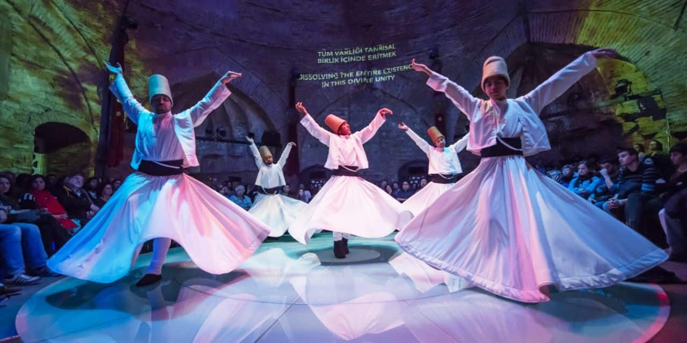
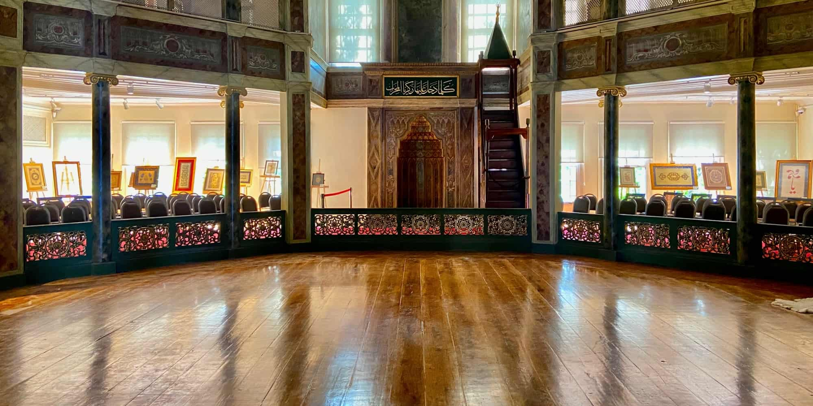

Where to See the Whirling Dervishes in Istanbul?
The best place to witness the Whirling Dervishes is of course in Konya, where the Mevlevi order (tarikat) was founded in the 13th century. But also in Istanbul, you have plenty of opportunities to see the Dervishes whirl. And because of the many choices, visitors often ask me: “What is the best place to watch a Whirling Dervishes performance, and what is it really all about?”
What Are the Whirling Dervishes?
The Whirling Dervishes took their name from Jelaleddin Rumi (1207-1273), the mystical poet and great Sufi master, called Mevlana (our leader) by his disciples. Sufis seek a close relationship with God, and for Mevlana, it was through chants, prayers, music, and a whirling dance.
This ceremony (sema) can be witnessed by visitors just like you. Remember that although it may look a bit like a performance, it is still a religious ceremony. Refrain from talking, leaving your seat, or taking pictures with a flash while the dervishes are spinning.
Where to Best Catch a Whirling Dervishes Performance?
The Galata Mevlevi Museum, or tekke, is undoubtedly the most famous Mevlevi Whirling Dervish hall. It is located on Galipdede Caddesi, not far from Tünel at the end of Istiklal Caddesi. The ceremony takes place every Sunday at 17:00. You can only buy tickets on location starting Saturday around noon. With a maximum capacity of 150 people, the performance is often sold out. Tickets cost 150 TL per person, children go in free unless they need a chair of their own.
Even if you can’t watch the ceremony there, the museum is still worth a visit if you want to know more about Sufism.
Book Dervish Dancing Tickets in Advance to Guarantee Seating
For bookings and more information, please contact us:
Email: info@istanbulwebpage.com
Phone: +90 123 456 7890
Alternatively, you can visit us at the Galata Mevlevi Museum for in-person booking.